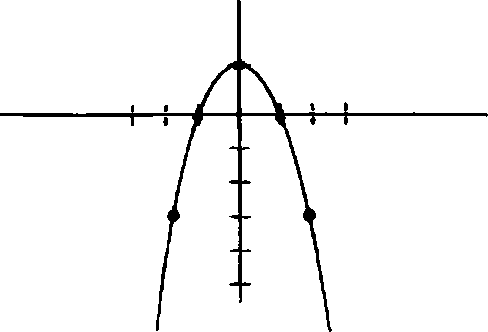

Colin in Evreka anı üç unsurdan oluşuyor.
İlk olarak bir ilişkinin grafiğini çizebileceğini fark etmişti ki böyle bir grafik şu şekilde görünebilir:
Colin in tezine göre yatay çizgi (buna x ekseni diyoruz) zamanı temsil ediyor. Eğrinin x ekseninden geçtiği ilk sefer ilişkinin başlangıcına denk düşüyor, ikinci geçişiyse ilişkinin
bitimini belirtiyor. Eğer eğri bu aradaki zamanı x ekseninin üstünde geçirirse (tıpkı örneğimizde olduğu gibi) o zaman kız, erkeği terk etmiştir; eğer eğri x ekseninin altından geçiyorsa erkek, kızı terk etmiş demektir. (“Erkek” ve “kız” bu bağlamda cinsiyet odaklı bir anlam taşımamaktadır; eşcinsel ilişkiler için de bunları “erkekl” ve “erkek2” veya “kızl” ve “kız2” olarak isimlendirebilirsiniz.) Kısacası bizim diyagramımızda çiftimiz ilk kez salı günü öpüşüyor ve kız, erkeği çarşamba günü terk ediyor. (Genel olarak hayli tipik bir ColinKatherine ilişkisi.)
X eksenini ilişkinin sadece başında ve sonunda kesen eğri, zamanın herhangi bir noktasında bu eksenden ne kadar uzaksa ilişki ayrılık noktasından o kadar uzaktır ya da başka bir deyişle ilişkinin iyi gittiği anlamına gelmektedir. Daha karmaşık bir örnek vermek için size benim eski kız arkadaşlarımdan biriyle ilişkimin grafiğini sunuyorum:
İlk patlama şubat ayında gerçekleşti; birkaç saat içinde buluştuk, bir kar fırtınası çıktı, sonra da kız arkadaşım buz tutmuş
otobanda yaptığı araba kazasında bileğini kırdı. Bir anda kendimizi fırtına yüzünden benim daireme tıkılmış halde bulduk; aldığı ağrı kesiciler yüzünden o, kafası dumanlı ve iş göremez durumdaydı, bense yeni üstlendiğim erkek arkadaşlık ve hemşirelik görevleriyle sarhoş ve şaşkın haldeydim. Bu süreç iki hafta sonra, kar eridikten ve onun eli iyileştikten sonra dairemden çıkıp dünyayla iletişime geçmek zorunda kaldığımız anda birdenbire sona erdi çünkü birbirinden radikal anlamda farklı hayatlar sürdürdüğümüz ve pek de ortak noktamız olmadığını anında keşfetmiştik. Bir sonraki daha küçük çıkıntı tatil için Budapeşte'ye gittiğimizde gerçekleşti. Fakat bu da çok kısa süre sonra, her romantik Budapeşte gününün yirmi üç saatini tam anlamıyla her şey hakkında birbirimizle didiştiğimizi fark ettiğimizde sona erdi. Eğri sonunda x eksenini ağustos ayı civarında, benim onu terk ettiğim ve onun beni dairesinden Berkeley sokaklarına atıp gecenin bir yansında evsiz ve beş parasız bıraktığı anda kesiyor.
Colin’in Evreka anının ikinci unsuru grafiklerin (romantik ilişkilerin grafikleri de dâhil olmak üzere) fonksiyonlarla temsil edilebileceğine dair gerçeklikte yatıyor. Bu konu biraz detaylı açıklama gerektirecek o yüzden lütfen dayanan.
İlk olarak söylenmesi gereken şey şu şekilde bir diyagram çizdiğimizde:
her noktanın sayılarla gösterilebildiğidir. Yani yatay çizginin (x ekseni) üstünde minik sayılar var, tıpkı dikey çizginin (y ekseni) üstünde olduğu gibi. Şimdi, düzlemin herhangi bir yerindeki tek bir noktayı belirleyebilmek için sadece iki sayı kullanmak yeterlidir: Biri bize noktanın x ekseninin neresinde yer aldığım söyler, ötekiyse y ekseninin hangi kısmında olduğunu. Örneğin, (2,1) noktası x eksenindeki “2” işaretli kısma ve y ekseninde “1” işaretli kısma karşılık gelmelidir. Yani aynı şekilde, jt ile y eksenlerinin kesiştiği ve (0,0) ismi verilen bölgenin sağına doğru iki birim, üstüne doğru bir birimlik bölgeye yerleşir. Benzer bir şekilde (0,2) y ekseninde kesişimin iki birim aşağısında, (3,2) ise kesişimin üç birim solunda ve iki birim aşağısında yer almaktadır.
Pekâlâ, fonksiyonlara gelelim: Fonksiyon, bir sayıyı başka bir sayıya çeviren bir makine gibidir. Çok basit bir oyun için kural kitabıdır diyebiliriz: Size istediğim herhangi bir sayıyı veriyorum ve siz de bana her seferinde başka bir sayıyı geri veriyorsunuz. Örneğin, bir fonksiyon şöyle söyleyebilir. “Sayıyı al ve onu kendisiyle çarp (yani, karesini al).” Bunun üstüne konuşmamız şu şekilde gidecektir:
BEN: 1
SEN: 1
BEN: 2
SEN: 4
BEN: 3
SEN: 9
BEN: 9.252.459.984
SEN: 85.608.015.755.521.280.256
Şimdi, çoğu fonksiyon cebirsel denklemler kullanılarak yazılabilir. Örneğin, yukarıdaki fonksiyon şöyle yazılacaktı
f(x) = x2
ki bu şu anlama gelmektedir: Ben size x rakamım verdiğimde fonksiyon size bu x sayısını alıp kendisiyle çarpmanızı (yani,*2 sayısını hesap etmenizi) ve çıkan yeni sayıyı bana geri vermenizi söylemektedir. Bu fonksiyonu kullanarak (x,f(x)) formunun
tüm noktalarını grafikte işaretleyebiliriz. Bu noktalar düzlemde bir çeşit eğri oluşturur ve biz bu eğriye “fonksiyonun grafiği” deriz. f(x) = x2 fonksiyonunu düşünün. (1,1), (2,4) ve (3,9) noktalarım işaretleyebiliriz.
Bu durumda, ek olarak (0,0), (1,1), (2,4) ve (3,9) noktalarım da işaredemek işe yarayabilir. (Negatif bir sayıyı alıp kendisiyle çarparsanız pozitif sayı elde edildiğini unutmayın.)
Şimdi muhtemelen grafiğin şuna benzer bir eğri olacağım tahmin edebiliyorsunuzdur:
Ne yazık ki bu grafiğin ilişkileri temsil etmesi açısından çok iyi bir iş çıkartamadığını da fark edeceksiniz. Colin’in kendi Teoremi için kullanmak istediği grafiklerin hepsinin * eksenini iki kez (çiftin çıkmaya başladığı ve ayrıldığı zaman için birer kez) kesmesi gerekiyor, oysa bizim çizdiğimiz grafik, eksene bir kez değdi. Fakat bu biraz daha karmaşık fonksiyonlar kullanılarak kolaylıkla düzeltilebilir. Örneğin f(x) = 1 — x2 fonksiyonunu düşünün.

Bu grafik Colin için hayli tamdık. Kız taralından terk edildiği kısa bir ilişkinin grafiği (kızın Colin’i terk ettiğini biliyoruz çünkü ilk öpüşme ile terk etme arasındaki grafik x ekseninin
üstünde). Colinin hayat öyküsünün ana hatlannı çizen bir grafik. Şimdi tek ihtiyacımız olan şey bazı ayrıntıları belirtmek için nasıl değiştirmemiz gerektiğini anlamak.
Yirminci yüzyıl matematiğinin büyük konularından biri “ailelerdeki” her şeyi inceleme dürtüşüydü. (Matematikçiler “aile” kelimesini kullandığında asbnda “herhangi bir benzer veya bağlantılı obje toplamım” kastetmektedir. Öm., bir sandalye ile masa “mobilya ailesinin” üyesidir.)
Ana fikir şu: Bir çizgi, noktalar toplamından (“ailesinden”) ibarettir; bir düzlem, çizgiler ailesinden oluşmaktadır, vesaire. Bunun sizi, bir obje (nokta gibi) ilginçse o zaman benzer objelerden oluşan tüm bir aileyi (çizgi gibi) incelemenin ilginç olduğuna ikna etmesi gerekiyor. Bu bakış açısı son altmış yılda yapılan matematik araştırmalarına egemen oldu.
Bu da bizi Colinin Evreka yapbozunun üçüncü parçasına getiriyor. Her Katherine farklı, o yüzden Colinin yeni bir Katherineln ellerinde çektiği her terk ediliş öncekilerden farklı oluyor. Bu da Colinin, tek bir fonksiyonu, tek bir grafiği her ne kadar dikkatle inşa ederse etsin ancak tek bir Katherine hakkında bilgi alacağı anlamına geliyor. Colinin asıl ihtiyacı olan tüm muhtemelen Katherine’leri ve onların fonksiyonlarım tek seferde inceleyebilmek. Yani başka bir deyişle ihtiyacı olan şey, tüm Katherine fonksiyonları ailesini incelemek.
Ve işte Colinin kavradığı şey de nihayetinde bu: İlişkilerin grafiğinin çıkartılabileceği, grafiklerin fonksiyonlardan oluşturulduğu ve tüm bu tip fonksiyonların tek bir (hayli karma
şık) formülle, müstakbel bir Katherine’in onu ne zaman terk edeceğini (ve daha da önemlisi terk edip terk etmeyeceğini) öngörebilmesini sağlayabilecek şekilde incelenebileceği.80
Bunun ne anlama gelebileceğine dair bir örnek verelim; hatta Colinln denediği ilk örnekten bahsedebiliriz. Formül şöyle görünüyor:
f(x) = D3x2D
Bu ifadeyi açıklarken çok sayıda soruya yanıt vermem gerekiyor: Öncelikle, D de nesi? Bu Terk Eden/Terk Edilen farkı: Herhangi birine kalp kırıldığı spektrumunda nereye düştüklerine göre 0 ila 5 arasında bir sayı veriyorsunuz. Eğer bir kız ile erkek arasındaki ilişkinin nasıl yürüyeceğini öngörmeye çalışıyorsanız erkeğin TE/TE farkı sayısını alıp kızın TE/TE fada sayısından çıkartıyorsunuz ve cevaba A ismi veriyorsunuz. (Yani erkek 2, kız 4 is e D =2 çıkıyor.)
Şimdi bunun grafikte ne gibi bir etki yarattığına bakalım. Demin verdiğim örnekte oğlan 2, kız 4 is e D =2 olduğu için elimizdeki
f(x) =8x2 + 2
şöyle bir grafik çıkarıyor:
80 Evet, hepsini aynı anda akılda tutmak zor. Bakın, John size Colinin üstünzekâlı olduğunu söylemişti tamam mı?
Gördüğünüz gibi ilişki o kadar da uzun sürmüyor ve kız sonunda erkeği terk ediyor (Colinin aşina olduğu bir durum).
Eğer erkek 5, kız 1 olsaydı, D = 4 olurdu ki bu da f(x) = 64x24
verirdi ve bu da şu grafiği çıkarırdı:
Bu ilişki daha da kısa sürüyor ama daha yoğun gibi görünüyor (zirve hayli dik) ve bu sefer erkek, kızı terk ediyor.
Ne yazık ki bu formülde sorunlar var. İlk başta D = 0 olursa, yani kişilerin Terk Eden veya Terk Edilen sayılan eşitse o zaman
f(x) = 0
çıkar ki bunun grafiği de yatay bir çizgi verir ve ilişkinin nerede başlayıp nerede bittiğini göremezsiniz. Daha da basit olan problemse ilişkilerin bu kadar basit olduğunu, grafiklerinin tek tip olacağını iddia etmenin saçma olması ki Lindsey Lee Wells de sonunda Colinln bunu anlamasına yardımcı oluyor. Böylece Colin’in formülü sonunda çok daha incelikli bir hal alıyor.
Ancak bu durumda asd konu apaçık ortada: D değişebildiği için bu tek formül, her biri farklı bir ColinKatherine ilişkisini betimlemek için kullandabilecek tüm bir fonksiyon ailesini belirtebiliyor. Yani Colin’in artık tek yapması gereken bu formüle daha fazla değişken (D benzeri daha fazla unsur) ekleyerek, içerdiği fonksiyon ailesinin daha büyük, daha karmaşık ve dolayısıyla Katherine terk edişleri dünyasının girift ve zor dünyasını daha kapsayıcı kılmak ki Colin Lindsey sayesinde bunu sonunda fark ediyor.
Kısacası Colin Singleton, Evreka anı ve Katherine Öngörülebilirliği Teoreminin hikâyesi bu. Aklı başında hiçbir yetişkin matematikçinin (en azından ruhu olanların) tek bir formülle romantizmin öngörülebileceğini ciddi ciddi iddia etmeyeceğini söylemem gerekse de bu konuya son dönemde eğilen bazı çalışmalar yapıldı. Daha belirgin konuşmak gerekirse psikolog John Gottman (ayrıca Washington Üniversitesi’nin “Aşk Labı”mn uzun süredir başıdır) ile aralarında James Murray m de olduğu bir ortak yazar grubu The Mathematics of Marriage isimli, evliliklerin boşanmayla sona erip ermeyeceğini matematik kullanarak öngördüklerini iddia eden bir kitap yayımladılar. Temel felsefesi ana hadanyla Coliriin Teoreminden pek farklı değil ama orada kullanılan matematik çok daha incelikli ve iddia edilen sonuç çok daha mütevazı (bu insanlar her boşanmayı öngörebileceklerini değil, sadece bilgiye dayalı bazı tahminler yapabileceklerini söylüyorlar(81)(82)
Son olarak eklemek istediğim bir şey var: Johrfun, edebî materyal uğruna arkadaşlarının hayatım parça pinçik etmeye yatkınlığına ve okulda diğerlerinden biraz daha önde olduğum gerçeğine rağmen Coliriin karakteri kesinlikle benden esinlenilerek yazılmamıştır. Evvela ben Katherine isimli sadece iki kızı öptüm.
__________________
81 Çok önemli sanki... Ben de arkadaşlarımın ilişkilerinin sürüp sürmeyeceğiyle ilgili bilgiye dayalı tahminlerde bulunabiliyorum. Sanırım burada önemli olan bu bilgiye dayalı tahmin sürecini matematiksel açıdan haklı çıkarabilmelerinde yatıyor.
82 Bu çalışma benim burada özet geçemeyeceğim kadar teknik detay içeriyor (örneğin, tek kelimesini anlamıyorum) fakat okumak isterseniz Gottman, Murray, Svvanson, Tyson ve (bir başka) Swanson’ın kaleme aldığı devasa ve akıl ermez The Mathematics of Marriage isimli kitabı deneyebilir veya Jordan Ellenberg’in http://slate.msn.com/id/2081484/ adresindeki daha ve eğlenceli inceleme ve özetine göz gezdirebilirsiniz.
Fakat ilginç olan patolojik bir Terk Eklen olarak sürdürdüğüm hayatım boyunca beni sadece bu iki Katherine terk etti. Tuhaf. Orada bir yerde bir formül var mı diye merak ediyor insan...
—Daniel Biss
Profesör Asistanı, Şikago Üniversitesi ve
Clay Matematik Enstitüsü Araştırma Görevlisi